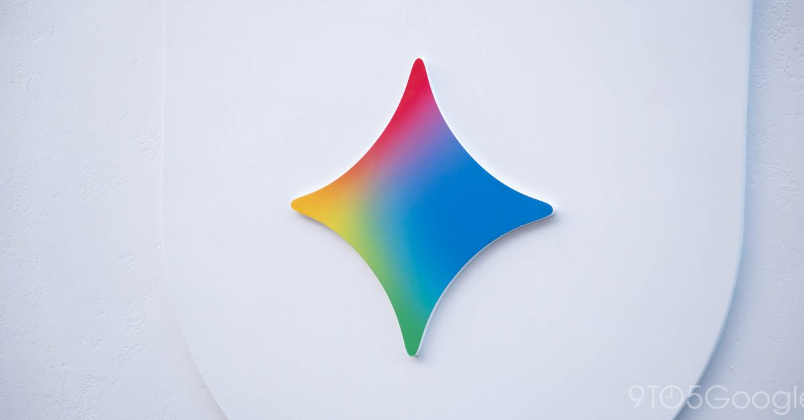

Google тихо, но официально подтвердила крупное урезание бесплатного доступа к Gemini. В обновлённой справочной документации «Changes to Gemini model access and limits» сказано: с 9 октября 2026 года пользователи без платной подписки смогут пользоваться только моделью Gemini 3.5 Flash-Lite. Текущие бесплатные доступы к Gemini 3.6 Flash и Gemini 3.1 Pro будут отключены.
Подписка AI Plus за $4,99 в месяц сохранит Flash-Lite и Flash, но лишится Pro. Полный набор моделей остаётся у AI Pro ($19,99) и AI Ultra ($99,99) — более того, AI Pro в качестве компенсации получит режим Deep Think с «максимальным параллельным рассуждением», который раньше был эксклюзивом дорогих тарифов. Абонентам Plus Google обещает прислать письмо с точными сроками перехода.
Это уже второе ужесточение за год: в мае 2026-го Gemini перешла на «вычислительные» лимиты, которые обновляются каждые 5 часов до недельного потолка. В октябре компания добавит для каждой модели уровни усилия (low/medium/high) — ответы станут тщательнее, но съедят лимит быстрее. На фоне всего этого Google на прошлой неделе представила новую фронтир-модель Gemini 4 Argon — и сначала она достанется только подписчикам Ultra.
Бесплатный вход в крупные ИИ-ассистенты системно сжимается: сначала режут лимиты, потом — сами модели. Для обычной аудитории «бесплатный ИИ» всё больше означает урезанную лёгкую модель, а полноценные возможности переезжают за подписочный барьер. Российские сервисы (например, бесплатный GigaChat) пока держат обратную тактику — доступность широкой аудитории остаётся их конкурентным козырем.
Среди подхвативших новость СМИ детали сверяют по той же справке Google; русскоязычный пересказ уже вышел на ТАСС.